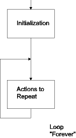
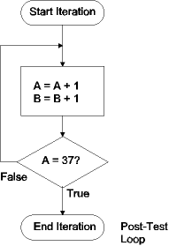
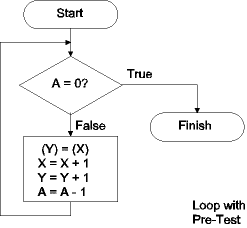

| Previous Section | Next Section | Index | Questions | Search the Text |
Iteration is a very important technique in microcontroller programs. Iteration allows an operation to be performed repeatedly, which is necessary for almost every means of equipment control. These program loops differ in structure based on where the test for exiting the loop is located. We will look at the cases where the exit is done with a test at the start of the loop, the end of the loop, and "never".
The simplest loop is the "Forever" loop. This loop is used to perform an action repeatedly until the power is shut off. Microcontroller programs at their outermost level are in a Forever loop because there is no exit from a microcontroller program. The forever loop has the following flowchart:

The Initialization block is outside the loop, and contains code that will only be executed once. The Actions to Repeat block contains the code that will be executed repeatedly. In the C language, this structure is typically represented in one of these two ways:
Initialization code
for (;;) {
Action to Repeat
}
or
Initialization code
while (1) {
Action to Repeat
}
In 68HC12 Assembler we implement it with a label and an unconditional branch (or jump) instruction:
; Initialization code goes here
Loop:
; Action to repeat goes here
bra Loop ; Use "jmp" if Loop target is out of range.
This type of loop is for iteration of the form "do something while some state is true" or "do something until some state is true". We perform an action, test for a condition, and conditionally branch back to the action until the terminating condition is reached. Consider the problem "increment accumulator A and accumulator B until accumulator A equals 37." The flow chart would be:

This algorithm could be represented in C as:
char A, B;
/* ... */
do {
A++;
B++;
} while (A != 37);
In 68HC12 assembly language, we need to increment A and B, then compare A with the constant 37. We want to branch back to the increment instructions if A is not equal to 37:
; Start of iteration
loop: inca ; increment A and B
incb
cmpa #37 ; Branch back if A != 37
bne loop
; End of iteration
This is an example of a counter controlled loop. A counter, in this case accumulator A is used to determine how many iterations will be made. A sentinel controlled loop has a test condition based on an external event occurring. In this type of loop, it is not possible to know in advance how many iterations will occur.
With some counter controlled loops, we can eliminate the need for the compare instruction. For instance, if in the preceding example, we wanted to increment A and B until A was equal to zero, we could base the branch on the result of the inca instruction:
; Start of iteration
loop: incb ; increment A and B
inca
bne loop ; branch back if A != 0
; End of iteration
Sometimes we must be careful to avoid altering the carry condition code bit by the test code. Consider the problem of a multi-precision addition of two 4 byte values. These values are stored at A1 and B1, and the sum will be stored at C1. We could implement the algorithm this way:
ldx #A1+3 ; Address of least significant byte of A1
adda #0 ; Clears the carry bit (there is a better way!)
L1: ldaa 0,X ; Load byte from A1
adca B1-A1,X ; Add with carry byte from B1
; Why this works is left as an exercise!
staa C1-A1,X ; Store result byte into C1
dex ; Decrement X to point to previous byte in A1
cpx #A1 ; Have we gone too far?
bhs L1
However upon running the program, it is discovered that the sum is incorrect! The reason is that the cpx instruction will alter the carry bit needed by the next execution of adca. We can solve the problem by using a separate counter:
ldx #A1+3 ; Address of least significant byte of A1
ldab #4 ; Number of bytes to add
adda #0 ; Clears the carry bit (there is a better way!)
L1: ldaa 0,X ; Load byte from A1
adca B1-A1,X ; Add with carry byte from B1
; Why this works is left as an exercise!
staa C1-A1,X ; Store result byte into C1
dex ; Decrement X to point to previous byte in A1
decb ; Decrement number of bytes
bne L1 ; Branch while number of bytes > 0
The sequence of incrementing or decrementing a register, followed by a conditional branch on being zero or nonzero is so common that the 68HC12 has special instructions that combine the increment/decrement with a conditional branch. Six instructions are provided:
The "test" instructions don't increment or decrement the register, but just check if its contents are zero. All of these instructions have two operands. The first specifies the register to decrement/increment/test, and can be one of A, B, D, X, Y, or SP. The second operand is the PC relative address of the branch target, which can be between -256 and +255 bytes from the start of the next instruction. Using these instructions, our increment A and B example becomes:
; Start of iteration
loop: incb ; increment A and B
ibne A loop ; branch back if A != 0
; End of iteration
We can also improve the multi-precision addition example, which has also been changed so that only one counting register is used:
ldx #4 ; Number of bytes to add
adda #0 ; Clears the carry bit (there is a better way!)
L1: ldaa A1-1,X ; Load byte from A1
; Why *this* works is left as an exercise!
adca B1-1,X ; Add with carry byte from B1
staa C1-1,X ; Store result byte into C1
dbne X L1 ; Branch while number of bytes > 0
Often it is necessary to have a loop which performs the termination test at the top. This is done when there is the possibility that zero iterations should be performed. Consider this problem: Copy bytes from the location specified in register X to the location specified in register Y for a total number of bytes specified in register A, where register A can be zero. If at least one iteration were allowed (as in the case of the post-test loop) then one byte would be copied when register A were initially zero. Here is the flowchart for the problem:

In the C language, this would be:
unsigned char A;
unsigned char *X, *Y;
/* ... */
while (A != 0) {
*X++ = *Y++;
A--;
}
We could implement this in 68HC12 assembler:
L1: tsta ; Is A != 0?
beq L2 ; No - then finished
movb 1,X+ 1,Y+ ; Move byte from (X) to (Y), incrementing X,Y
deca ; Decrement A
bra L1 ; Go to start of loop
L2:
The problem with this code is that there are two branches per iteration, so the code does not run as fast as it could. We can rearrange the code so that there is only one branch per iteration, by putting the test at the end, and initially branch to the test:
tsta ; Set condition code based on register A
bra L2 ; Branch to loop test
L1: movb 1,X+ 1,Y+
deca
L2: bne L1 ; loop back if count non-zero
A clever programmer might go so far as to increment accumulator A before the loop, so as to be able to use the dbne instruction:
inca ; Increment count, so as to decrement next
bra L2 ; Branch to loop test
L1: movb 1,X+ 1,Y+
L2: dbne A L1 ; decrement count and loop back if non-zero
Still another approach would be to have a test at both ends, probably the best solution:
tbeq A L2 ; If count initially zero, skip iterations
L1: movb 1,X+ 1,Y+
dbne A L1 ; decrement count and loop back if non-zero
L2:
Continue with Using Tables and Arrays.
Return to the Index.